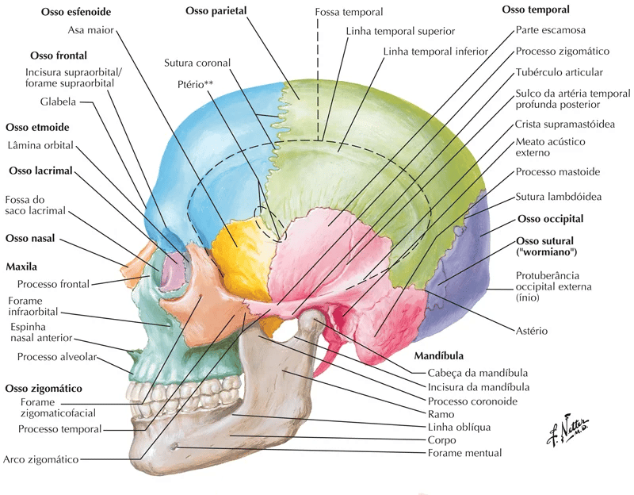
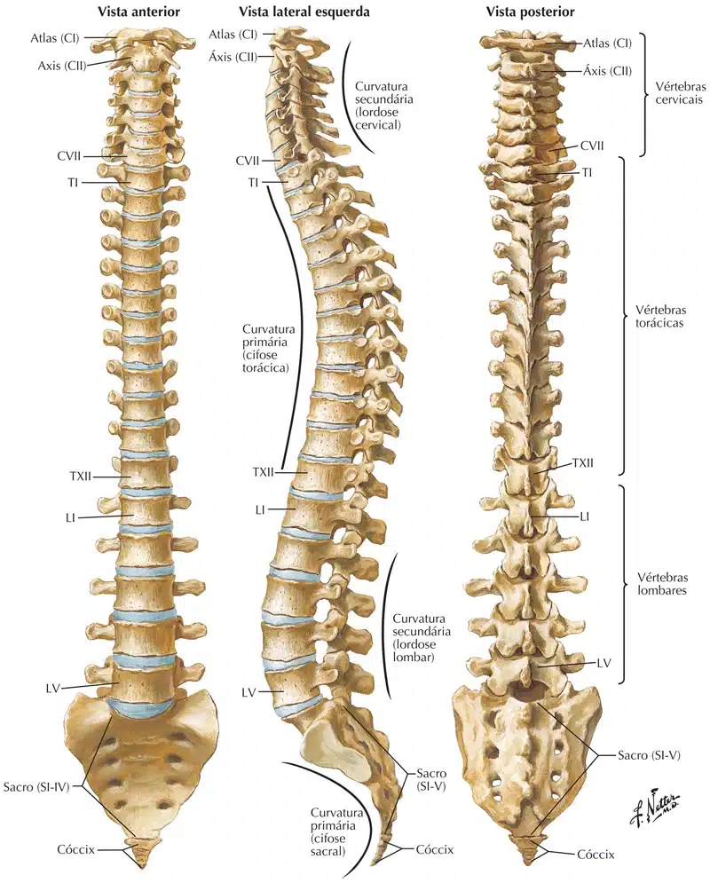
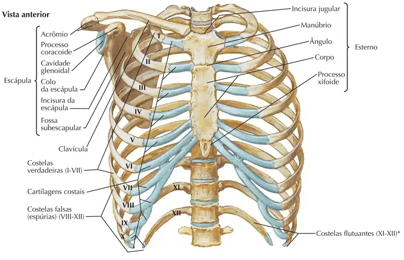
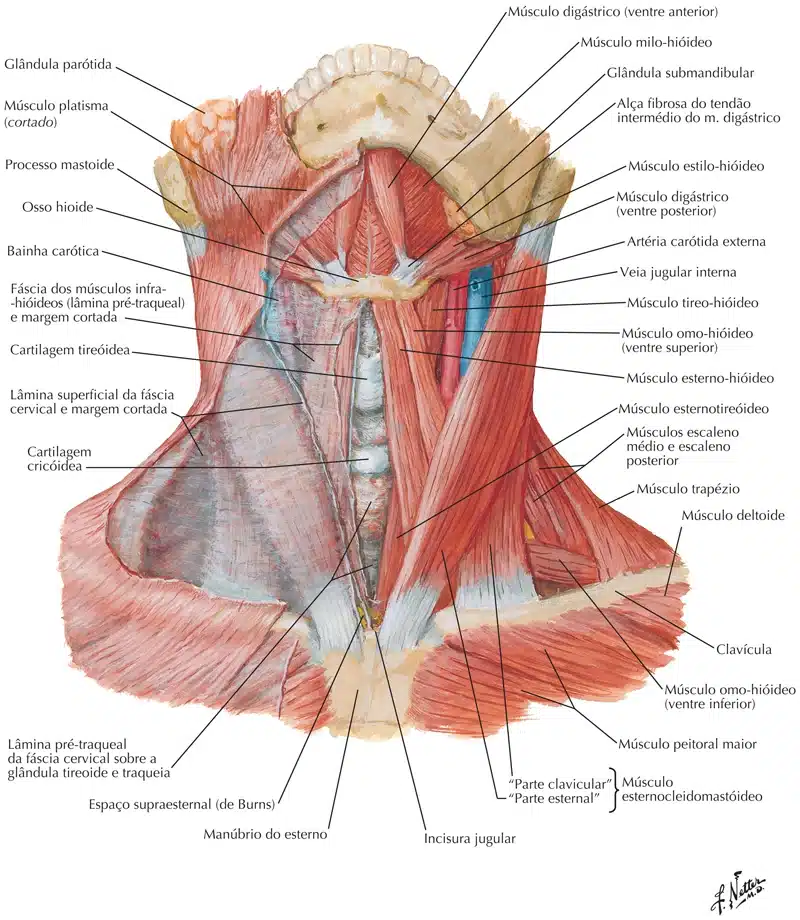
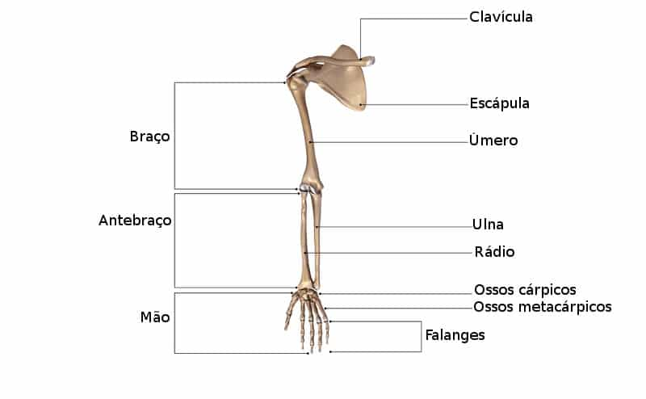

NETTER: Frank H. Netter Atlas De Anatomia Humana. 7 ed. Rio de Janeiro, Elsevier, 2018.

NETTER: Frank H. Netter Atlas De Anatomia Humana. 7 ed. Rio de Janeiro, Elsevier, 2018.
Além disso temos, a contagem pode aumentar se considerarmos os 06 ossículos da audição (três de cada lado).
Que não ajudam a compor o crânio, mas estão contidos nele, no interior dos ossos temporais.
Coluna vertebral
Vértebras cervicais (7);
Vértebras Torácicas (12);
Vértebras Lombares (5);
Osso Sacro (1) tendo cinco vértebras fundidas;
O osso cóccix (1) tem de quatro a cinco vértebras, também fundidas.

NETTER: Frank H. Netter Atlas De Anatomia Humana. 7 ed. Rio de Janeiro, Elsevier, 2018.
Costelas
24 ossos.
Divididos em 12 pares.
Osso esterno
1 osso.

NETTER: Frank H. Netter Atlas De Anatomia Humana. 7 ed. Rio de Janeiro, Elsevier, 2018.
osso hióide
1 osso.
Localizado na região do pescoço.

NETTER: Frank H. Netter Atlas De Anatomia Humana. 7 ed. Rio de Janeiro, Elsevier, 2018.
Esqueleto apendicular
A segunda parte do esqueleto é a porção apendicular (em amarelo na imagem), que consiste em todos os ossos dos membros superiores e inferiores (extremidades), ombro e pelve.
O esqueleto apendicular, que é preso ao esqueleto axial, em sua forma adulta comporta 126 ossos isolados.
Os ossos dos membros superiores podem ser divididos em quatro grupos principais:
(1) mão e punho;
(2) antebraço;
(3) braço (úmero)
e (4) cintura escapular.
Os ossos dos membros inferiores também podem ser divididos em quatro grupos principais:
(1) pé e tornozelo;
(2) perna;
(3) Coxa (fêmur);
e (4) cintura pélvica.
Membros superiores
Ombro:
Escápula (2)
Clavícula (2)
Úmero (2)
Antebraços:
Rádio (2)
Ulna (2)
Mãos e dedos:
Carpos (16)
Metacarpos (10)
Falanges (28)
Um total de 64 ossos.

Membros inferiores
Pelve (2):
Apesar de serem nomeados em 3 estruturas (íleo, ísquio e púbis), são contabilizados como apenas 1 osso, ou seja, apenas pelve.